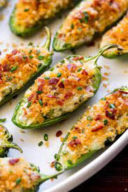

This homemade jalapeño poppers recipe was made by taking the best features of three or four other popper recipes and combining them to make something that tastes wonderful. A frequent request at my house, and at others. I usually make 100 and put them in the fridge. They don't last long so increase the recipe as necessary. Adjust the amount of bacon bits and type of shredded cheese to taste. Lots of tests will help you figure out the best way you like your jalapeño poppers.
- 12 ounces cream cheese, softened
- 1 (8 ounce) package shredded Cheddar cheese
- 1 tablespoon bacon bits
- 12 ounces jalapeño poppers, seeded and halved
- 1 cup milk
- 1 cup all-purpose flour
- 1 cup dry bread crumbs
- 2 quarts oil for frying, or as needed
- Mix cream cheese, Cheddar cheese, and bacon bits together in a medium bowl until well combined. Spoon mixture into jalapeño halves.
- Put milk in one small bowl, flour in a second, and bread crumbs in a third.
- Dip stuffed jalapeños in milk, then in flour, making sure they are well-coated. Transfer coated jalapeños to a plate; let dry for 10 minutes.
- Dip jalapeños in milk once more, then roll through the bread crumbs. Let dry on the plate for 10 minutes, then repeat dipping in milk and rolling in bread crumbs once more; make sure they are completely coated. Let dry.
- Heat oil to 365 degrees F (180 degrees C) in a medium skillet.
- Working in batches if necessary, deep-fry coated jalapeños until golden brown, 2 to 3 minutes. Remove and let drain on a paper towel.